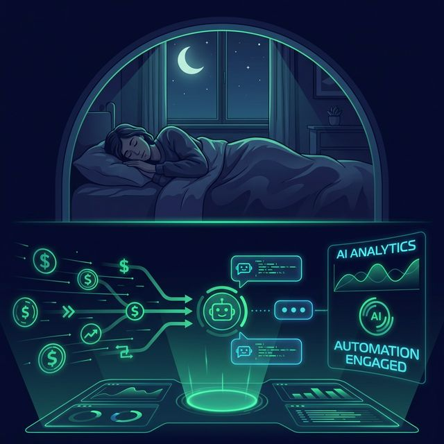
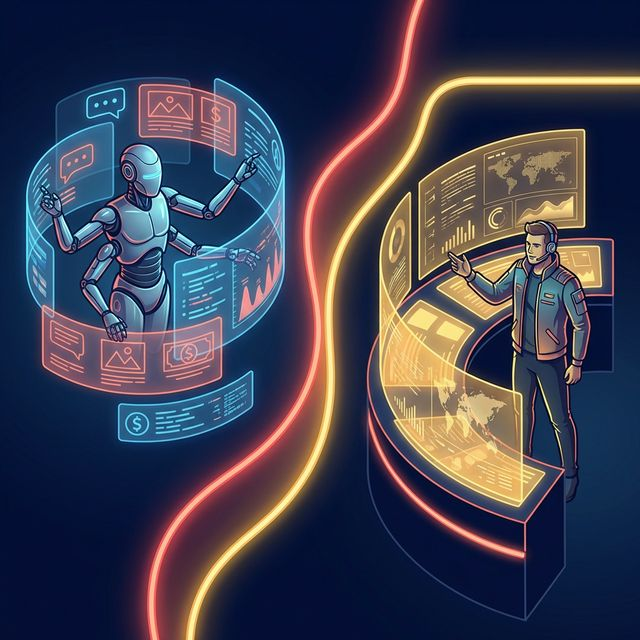

2 Despliegue Operacional: El Nuevo Flujo de Trabajo
Así es como funciona en la vida real. Tu trabajo será tomar las decisiones importantes, mientras la tecnología se encarga de las tareas repetitivas y aburridas.

🏗️ Un Equipo de Una Persona
Antes: Necesitabas contratar a un diseñador, a alguien para las redes,
a
un vendedor y a alguien para responder mensajes. Eso significaba pagar muchos sueldos y tener
dolores de
cabeza coordinando a todos.
Ahora: Tu equipo de trabajo es simple:
Tú (el dueño que dirige) + una Inteligencia Artificial que trabaja como tu
asistente
incansable. Haces mucho más, mucho más rápido, y por una fracción de lo que costaría pagar sueldos
fijos.

🛌 Un Día en tu Nueva Vida
02:00 AM — Tu asistente en internet busca clientes interesados mientras
duermes.
05:00 AM — Alguien curioso escribe. Tu asistente le contesta rápido,
amable,
resuelve sus dudas y cierra la venta.
08:00 AM — Te despiertas. Miras tu celular
y
ves que hay dinero nuevo de ventas que entraron de noche.
Tu única tarea del día:
atender bien a los
clientes y asegurarte de tener un producto excelente. La tecnología se encarga del
marketing.

⚔️ Qué haces Tú y qué hace el Software
El Software se encarga de: Responder las preguntas de siempre, buscar
nuevos clientes en internet, mandar recordatorios por chat y cobrar de manera
automática.
Tú te encargas de: Ser la cara de tu negocio, aportar la
creatividad,
garantizar que tu servicio sea espectacular y cerrar en persona las reuniones que requieren ese
toque
puramente humano y de confianza.